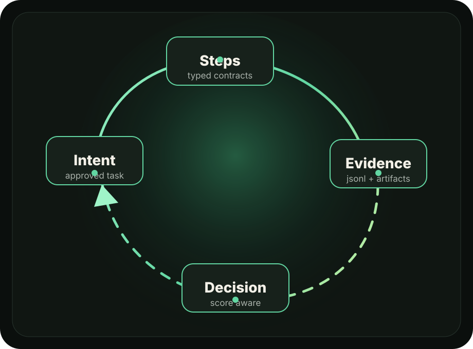

AgentPlane loop demo
Loop Brief
A static artifact that turns a loop run into something visible: intent, steps, evidence, and decision in one local page.
Inspect artifacts
Selected loop
tdd.fix prepares the repair path
- Load context
- Render prompt
- Patch
- Capture diff
- Run check
- Evaluate
Physical output
Files written to disk
- index.htmlpage structure
- styles.cssvisual system
- assets/loop-field.svglocal image asset
Manual runner
One live loop iteration
- Loop
- tdd.fix@0.1.0
- Iterations
- 1
- Executor
- Codex manual runner
- Handoff
- step input/output JSON
Retry proof
Second iteration fixed the missing marker
Iteration 001 failed its focused check because this marker was absent. Iteration 002 used that feedback, patched the page, and passed.